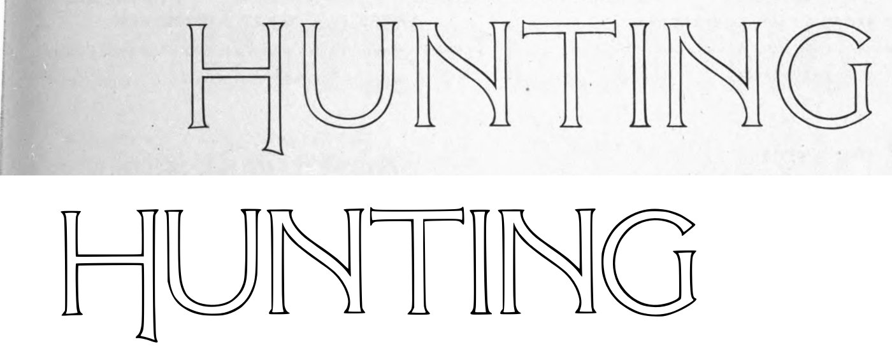
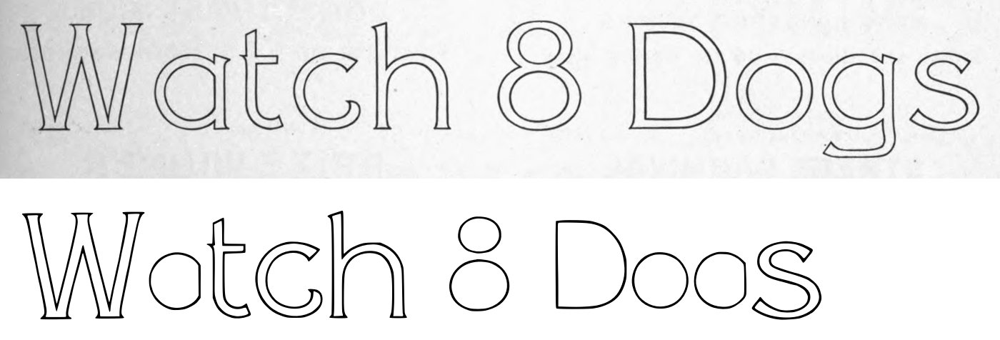
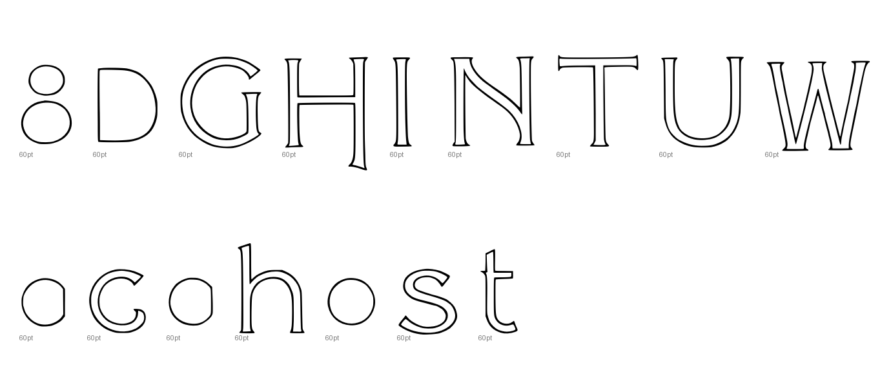
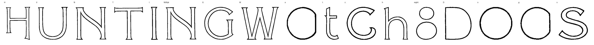

Gray letters are constructed, not traced.


2 warnings, 3 notes.
[
{
"level": "warn",
"check": "cap_height",
"glyph": "H",
"value": 0.259,
"note": "capital's ink height is off its line's cap height by more than 12% (misread box?)"
},
{
"level": "info",
"check": "specks",
"glyph": "T",
"value": 2,
"note": "marks beside the letter were recorded, not cut"
},
{
"level": "info",
"check": "pieces",
"glyph": "eight",
"value": 2,
"note": "the cut joined more than one ink component"
},
{
"level": "warn",
"check": "cap_height",
"glyph": "D",
"value": 0.169,
"note": "capital's ink height is off its line's cap height by more than 12% (misread box?)"
},
{
"level": "info",
"check": "specks",
"glyph": "g",
"value": 1,
"note": "marks beside the letter were recorded, not cut"
}
]
{
"397:60pt": {
"n_caps": 9,
"cap_height_px": 243,
"cap_source": "caps",
"baseline_px": 961,
"baselines": {
"3": 961,
"4": 1317.5
},
"glyphs": [
"H",
"U",
"N",
"T",
"I",
"N.60pt",
"G",
"W",
"a",
"t",
"c",
"h",
"eight",
"D",
"o",
"g",
"s"
],
"x_height_px": 173,
"figure_height_px": 215,
"stem_px": 4,
"scale": 2.88066,
"stem_units": 11.5,
"x_height": 498,
"figure_height": 619
}
}
{
"archive_id": "bookoftypespecim00barnrich",
"title": "Book of type specimens. Comprising a large variety of superior copper-mixed types, rules, borders, galleys, printing presses, electric-welded chases, paper and card cutters, wood goods, book binding machinery etc., together with valuable information to the craft. Specimen book no.9",
"creator": [
"Barnhart, bros. & Spindler, firm, type founders, Chicago",
"De Young family",
"De Young, Charles, 1881-"
],
"publisher": "Chicago, Barnhart bros. & Spindler",
"date": "[1907]",
"ppi": 400,
"url": "https://archive.org/details/bookoftypespecim00barnrich",
"copyright_status": "NOT_IN_COPYRIGHT",
"contributor": "University of California Libraries",
"leaves": [
397
]
}